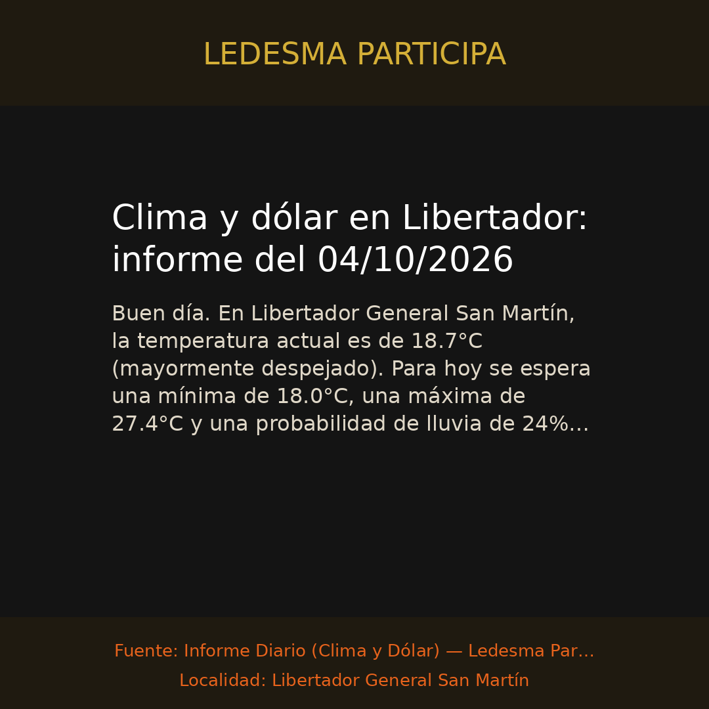

Libertador Gral. San MartínClima y dólar en Libertador: informe del 04/10/2026
Buen día. En Libertador General San Martín, la temperatura actual es de 18.7°C (mayormente despejado). Para hoy se espera una mínima de 18.0°C, una máxima de 27.4°C y una probabilidad de lluvia de…